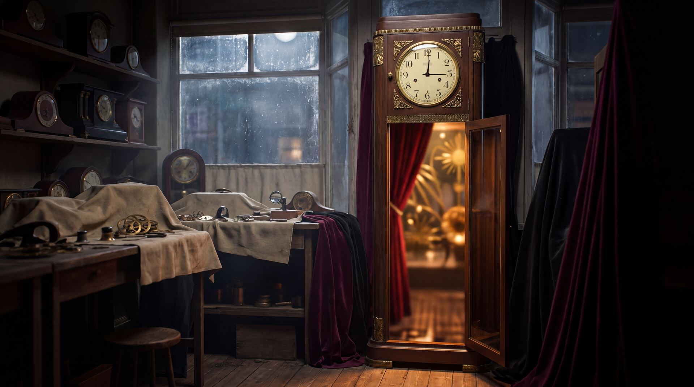

Wound Up: The Story of the Velvet Clock

The clock came first. Behind the dusty window of Vane & Sons, Clock Repair, 14 Halberd Street, stands a tall grandfather clock. Max Vane, a clockmaker's son, inherited the shop from his father and built a nightclub behind it.
The Velvet Clock is the smartest speakeasy in the city. You knock, give the password, and step through the case of the clock into a room full of jazz, gin and very bad decisions.
"What time is it?"
"Half past never."
Max times everything and forgives nothing. He keeps a ledger of everybody's sins, and he charges interest. A minute unaccounted for, he says, is a minute stolen.
Hattie Lane of The Clarion covers every party worth crashing. If something happens at the Velvet Clock, she files the story by noon.
The clock will outlast all of them. It will change hands, cities and decades. Wherever it stops, someone at the party has lost track of time, and someone else is lying about it.